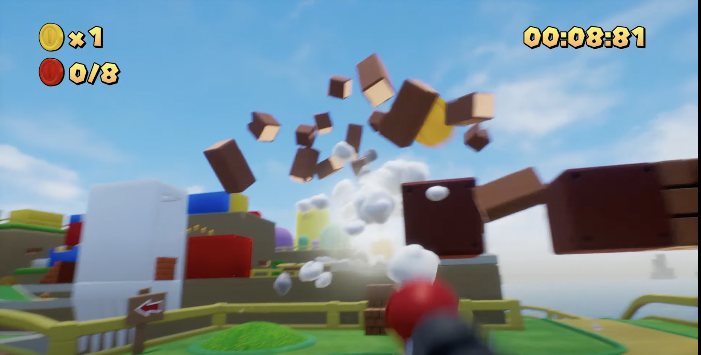
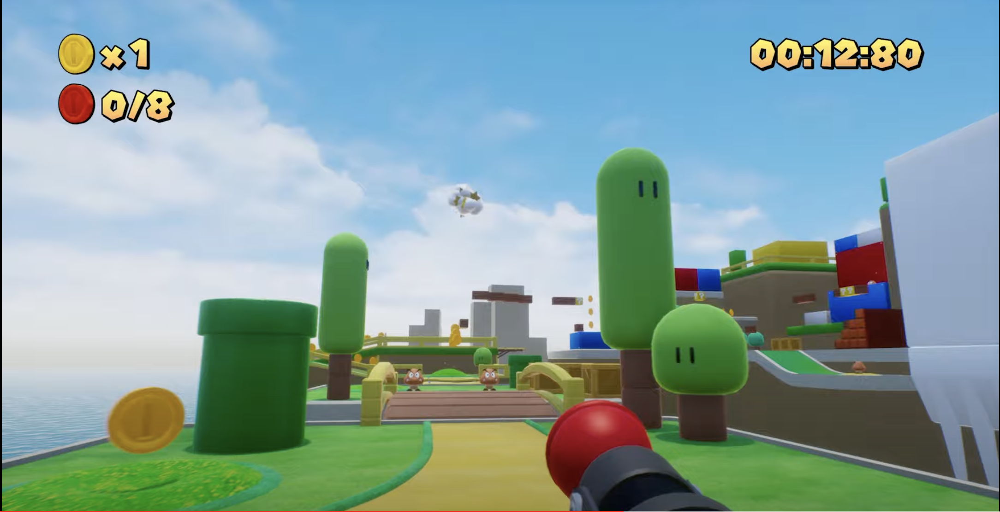
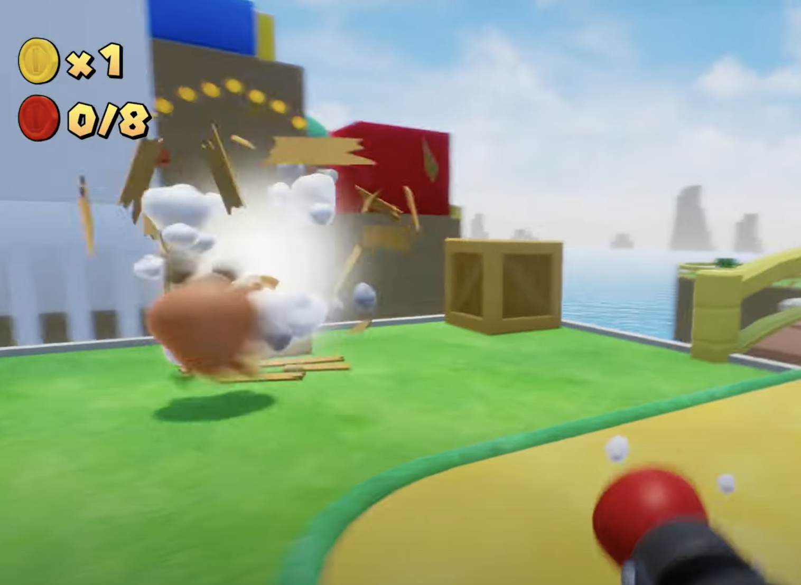
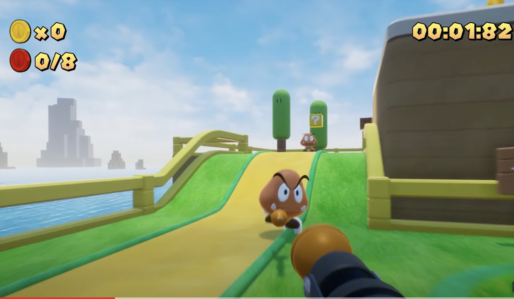
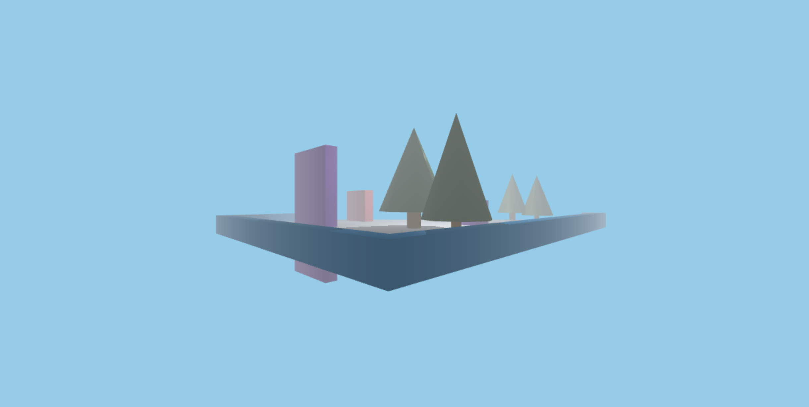
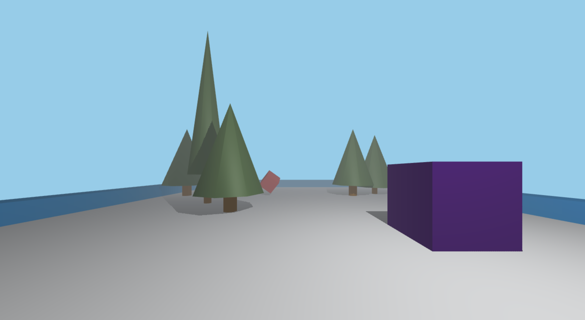
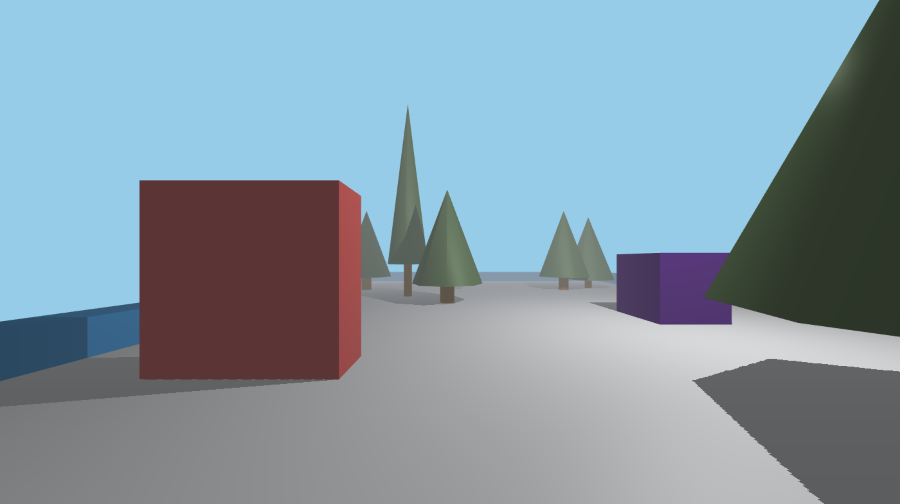

We are building a First Point of View interactive, 360 degree game render based on the popular video game Super Mario Brothers. Utilizing three.js and WebGL, we intend to create a 360 degree game that allows the player (the camera) to move around with arrow keys, shoot at enemies, bricks, boxes, and coin blocks, and see the amount of coins and time they have left to shoot.
|  |  |
|  |  |
We have rendered a 3D scene in which the user can move around and observe several objects. So far, we have initialized our scene by creating a floor mesh, instantiating player obstacles, trees, scene lights, boundaries, ambient fog, and also implemented movements such as turning left, up, right, and down. This experience is developed in the first-person perspective and provides an immersive look into a 3D world.
|  |
|  |
|  |
Reflecting on our current progress, our team bounced back a myriad of ideas such as a smoke simulator, water simulation, and our originally proposed idea of a first-person POV shooter game inspired by Valorant using Unity. Upon receiving our feedback, we’ve noticed that it was ambiguous as to what we intended to build on top of Unity and what we would be building on our own. To combat this, we focused on generating the entire scene from scratch and have a better understanding of what exactly we wanted to build. Now, we have currently built the foundation and bare bones of the project. Given that we have essentials like a 3D world and a first person point of view, we are free to focus on adding more intricate details. After we allow for the user to shoot projectiles at hostile entities, our plan indicates that we are working towards implementing motion blur, allowing for the player to shoot at enemies, implementing object collision, implementing a coin counter, and fleshing out the scene to follow the Super Mario Bros. theme and therefore, converting our scene into a playable game.
Three.js and WebGL renderer